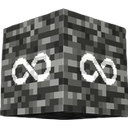

AppImage
Most Linux desktops
Download AppImagechmod +x BedrockOnLinux-*.AppImage
./BedrockOnLinux-*-x86_64.AppImageNo FUSE on your system? Run it with APPIMAGE_EXTRACT_AND_RUN=1.

BedrockOnLinuxFree · Open source · MIT
Real Microsoft sign-in, with Friends, public servers and Realms. The game comes from the Microsoft Store, downloaded with your own account. No repacks, no relay.
UbuntuDebianMint / LMDEFedoraArchopenSUSESteam Deck
Download
Every build is x86-64. Not sure which one? Take the AppImage. It carries its own Python, GUI toolkit and certificates, and runs on most desktops without installing anything.
Most Linux desktops
Download AppImagechmod +x BedrockOnLinux-*.AppImage
./BedrockOnLinux-*-x86_64.AppImageNo FUSE on your system? Run it with APPIMAGE_EXTRACT_AND_RUN=1.
Debian · Ubuntu · Mint · LMDE
Download .debsudo apt install ./bedrock-on-linux_*_amd64.debPuts bedrock-on-linux on your PATH and pulls in WebKitGTK.
Fedora · Nobara
Download .rpmsudo dnf install ./bedrock-on-linux-*.x86_64.rpmSame as the .deb: system install, dependencies declared.
Atomic systems such as Bazzite
Download Flatpakflatpak install --user ./BedrockOnLinux-*-x86_64.flatpakSandboxed. It cannot write host shortcuts or inject client DLLs. The Store sign-in also needs WebKitGTK, which the runtime does not ship yet.
A host that already has Python and Tk
Download .pyz./bedrock-on-linux-*.pyz guiSingle file. It uses your system Python and installs its two pinned dependencies on first use.
Every release ships checksums
sha256sum -c BedrockOnLinux-*-SHA256SUMSYou must own Minecraft. The game is downloaded from Microsoft's own CDN, under your account's licence. BedrockOnLinux ships no Minecraft files and redistributes none.
Get started
Nothing to configure first. The launcher checks your graphics stack before Wine ever runs.
Choose Sign in, open the Microsoft device-code page and type the code. You can skip this step. Offline, single-player worlds and LAN play still work. Only Realms, servers, the Marketplace and Xbox friends need the account.
Choose Minecraft or Minecraft Preview. The first PLAY opens a separate Store sign-in window, where you link the Microsoft account that owns the game. That step is required: it authorises the download.
Friends, Servers and Realms work from Minecraft's own tabs. The first run downloads the game and the engine, then verifies both. Later runs reuse them.
Once a version is installed and an account is linked, Minecraft can start on its own. Tools ▸ Create direct launch shortcut writes a Minecraft Bedrock desktop entry. Add it through Add a Non-Steam Game and it behaves like any other non-Steam title, with Steam Input and Deck fullscreen handling.
Game Mode shows one window at a time, so ▶ PLAY hands the screen over. The launcher steps aside while Minecraft runs, then comes back when you quit.
bedrock-on-linux shortcut # desktop / Steam entry
bedrock-on-linux play # launch right now
bedrock-on-linux import world.mcworld
bedrock-on-linux doctor # host deps + GPU safetyOn PATH with the .deb and .rpm. The AppImage, .pyz and Flatpak take the same commands through their own entry point.
What works
XGame configuration, XUser, request signing, gamertags, privileges and the XSAPI context are native code inside the engine. You sign in to Microsoft from inside Minecraft, exactly as on Windows.
Friends, invitations, joining a friend's world, public servers and Realms all run on that identity. Realms gets its own token for the Bedrock Realms audience.
Sign-in happens directly between your machine, Microsoft and Xbox. Nothing is routed through a third party.
The engine never scans or rewrites the Minecraft process, and packaging rejects any build that still contains that code. The launcher does adjust three files on disk before launch, including the game's stack size. Each edit is fingerprinted and skipped when it no longer matches.
Import World and custom-skin selection open your real file chooser. The engine implements the WinAppSDK picker for both Windows architectures.
Your existing list loads, through a user-only token built for Minecraft's own Achievements request. Nothing is unlocked, emulated or forced.
Separate Xbox profiles keep accounts, prefixes and worlds apart, while the multi-gigabyte game and its caches stay shared.
.mcworld, .mcaddon, .mcpack, .mctemplate and .mcskin import from the command line. Nothing is overwritten.
Engine updates are SHA-256 pinned and swapped atomically. A bad download, a full disk or a hash mismatch leaves the working engine exactly where it was.
The launcher reads driver state that already exists. It never opens a Vulkan device just to test yours, and it refuses to start on top of a session that already died.
Requirements
BOL_INPUT=wayland, but it stays experimental.VK_EXT_device_generated_commands, or the older NVIDIA VK_NV_device_generated_commands. The bundled vkd3d-proton payload carries both.No space left on device is harmless. Free some space and press PLAY again.libwebkit2gtk-4.1-0) for the Store sign-in window. The .deb and .rpm pull it in, and doctor reports it when missing.Settings ▸ Advanced ▸ Legacy compatibility renderer exists, but treat it as a last resort. It swaps the entire Direct3D stack to WineD3D, dropping DXVK and vkd3d-proton. Minecraft renders purely through D3D12, so this replaces exactly the renderer it uses. Artifacts are common and performance may not improve.
Find out why the session died, then reboot. A fatal GPU event in the kernel log means fixing the driver first. Once the launcher can prove the incident belongs to a previous boot, Settings ▸ Tools offers to acknowledge it.
Under the hood
Xodus signs in to your Microsoft account, asks Microsoft's licensing service for the title licence, and streams the MSIXVC package straight from the Xbox CDN, decrypting it as it goes. This is the same path Windows takes.
The game then runs on a GDK-Proton engine built from a WineGDK fork. You never need a compiler, a Windows install or a second machine.
There is no version list. The Xbox CDN serves only the current build of each edition, so you get whatever Microsoft is shipping today, exactly as on Windows. The launcher re-checks for a delta every twelve hours and downloads only what changed.
bol/config.py.third_party/.FAQ
Yes. The game is downloaded from the Microsoft Store under your own account's licence, so that account has to own Minecraft Bedrock Edition. You can also point the launcher at a local copy you already have.
No. BedrockOnLinux ships no Minecraft game files and redistributes none by proxy either. It is a compatibility launcher: it fetches the real package from Microsoft's CDN with your licence, then runs it on Wine.
Any x86-64 glibc desktop: Ubuntu, Debian, Linux Mint and LMDE, Fedora, Arch, openSUSE and their derivatives. Native packages exist for Debian-family and Fedora-family systems, an AppImage for everything else, and a Flatpak for atomic systems such as Bazzite.
Yes. Sign-in, Friends, invitations, joining a friend's world, public servers and Realms all run on a real Microsoft identity, implemented natively in the engine rather than on a proxy or a relay.
Yes, including Game Mode. Add either the launcher or the generated Minecraft Bedrock shortcut as a non-Steam game. In Game Mode the launcher steps aside while the game runs, then comes back when you quit.
No. The Xbox CDN serves only the current build of each edition, so there is no way to match a server frozen on an older one. Updates arrive on their own.
The launcher window needs X11 or XWayland, and the game normally uses XWayland too. Native Wine Wayland is available with BOL_INPUT=wayland, but it is experimental and does not remove the launcher's own requirement.
Not through the launcher. Xbox sign-in uses Microsoft's device-code page in your browser, and the Store sign-in opens Microsoft's own page in a webview. Your credentials stay between you and Microsoft. The launcher only stores the resulting tokens, in its private data folder.
Not while it runs. The engine never scans or rewrites the Minecraft process, and packaging rejects any engine build that still contains that code. Before launch, the launcher does adjust three files on disk: two Wine libraries, and the game executable's stack size, which prevents a crash in the settings and pause menus. Every edit checks a byte fingerprint first and is skipped when the bytes no longer match.
No. Every build is x86-64 and glibc-based. ARM and musl-only systems are out of scope.
Yes. BedrockOnLinux is free and open source under the MIT licence. You still need to own the game.
Start with bedrock-on-linux doctor for host dependencies and
GPU safety, or doctor --network for DNS, TLS, clock and VPN
observations. Logs live in
~/.local/share/bedrock-on-linux/logs/, and
Settings ▸ Open logs folder opens them.
A bug report is much easier to act on with the launcher version, engine revision, Minecraft version, distribution, GPU and driver, plus the relevant logs. Never include account tokens.